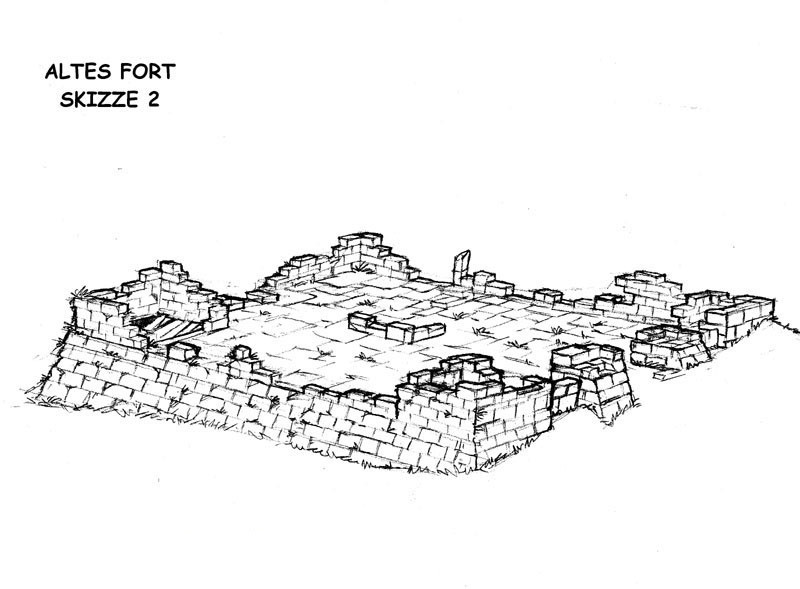

<article>
    <h1><a href="../../">../</a> Surface Concepts</h1>
    <h2>by Ralf Marczinczik</h2>

    <!-- SURFACE -->

    <!-- Trees -->
    
    


    <!-- Demontower -->
    
    
    
    
    

    <!-- Old Fort -->
    
    
    

    <!-- Fogtower -->
    
    

    <!-- Exchange Place -->
    

    <!-- Canyon -->
    

    <!-- Flussdelta -->
    

    <!-- Bridges -->
    
    
    
    
    

     <!-- Landmarks -->
     
     
     
     
     
     
     
     
     
</article>